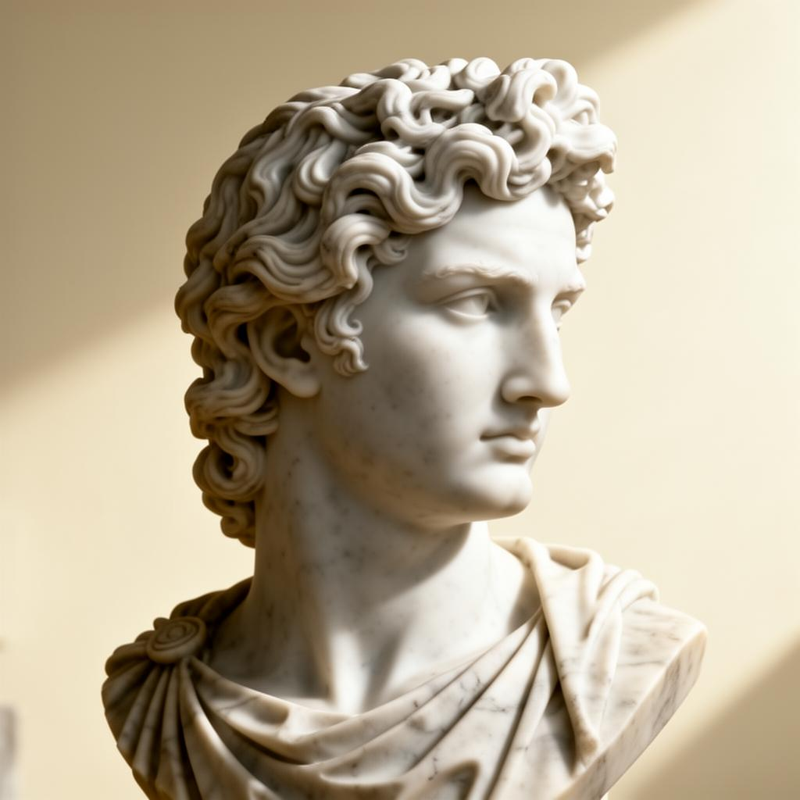

Александар
Велики
Владеел 336 — 323 п.н.е.
“Ништо не е невозможно за оној што се осмелува да се обиде.”
До дваесет и пет години го урна Персиското Царство; до триесет ја пренесе хеленската мисла до Инд. Од Александрија до Бактрија создаде нов свет, оставајќи зад себе не само освоени градови туку и нова цивилизација — хеленистичка, немирна, блескава.